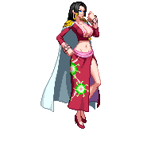

-
Monkey D. Luffy #001
- Luffy do Chapéu de Palha
Capitão dos Chapéus de Palha, é usuário da Gomu Gomu no Mi(fruta da borracha), pode esticar seu corpo como bem entender. É também usário de haki do armamento, haki da observação e haki do rei.
-
Roronoa Zoro #002
- Caçador de Piratas
Espadachim usuário de 3 espadas, haki do armamento e haki da observação. É capaz de lançar golpes à distância.
-
Vinsmoke Sanji #003
- Sanji Perna Preta
Cozinheiro, usuário de hakido do armamento e haki da observação. É capaz de ater fogo à própria perna para deixar seus golpes ainda mais poderosos.
-
Nico Robin #004

- Luz da Revolução
Arqueóloga e usuária Hana Hana no Mi, que a permite florescer qualquer e várias partes de seu corpo no lugar que desejar, pode até mesmo se clonar.
-
Tony Chopper #005
- Guaxinim
Rena usuária da Hito Hito no Mi, a fruta do humano. Pode se transformar em até 6 formas diferentes com a ajuda de um medicamento que criou para dar mais poder à sua fruta. É também médico.
-
Boa Hancock #006
- Imperatriz Pirata
Conhecida também como "Princesa Cobra", é imperatriz em Amazon Lily, a ilha das mulheres, e usuária da Mero Mero no Mi, a fruta do amor, que a permite petrificar qualquer pessoa que a ache atraente. Também usa haki do armamento, haki da observação e haki do rei.
-
Trafalgar Law #007
- Cirurgião da Morte
Capitão e médico dos Piratas Heart, é usuário da Ope Ope no Mi, que o permite criar um espaço onde pode ter total controle do posicionamente e orientação de qulaquer coisa dentro dela. Também usa haki do armamento e haki da observação.
-
Portgas D. Ace #008
- Ace Punhos-de-Fogo
Usuário da Mera Mera no Mi, a fruta do fogo que lhe permite transformar seu corpo inteiro em chamas. Usa haki do armamento e haki da observação.
-
Sir Crocodile #009
- Rei do Deserto
Usuário da Suna Suna no Mi, a fruta da areia que, além de o permitir transformar seu corpo em areia, pode também tirar vantagem da areia no ambiente ao seu redor. Usuário de haki do armamento e de haki da observação.
-
Sabo #010
- Imperador das chamas
Um dos conselheiros do exército revolucionário. Sabe lutar caratê tritão, embuindo seus golpes de força sobre-humana. Usa haki do armamento e haki da obaservação.